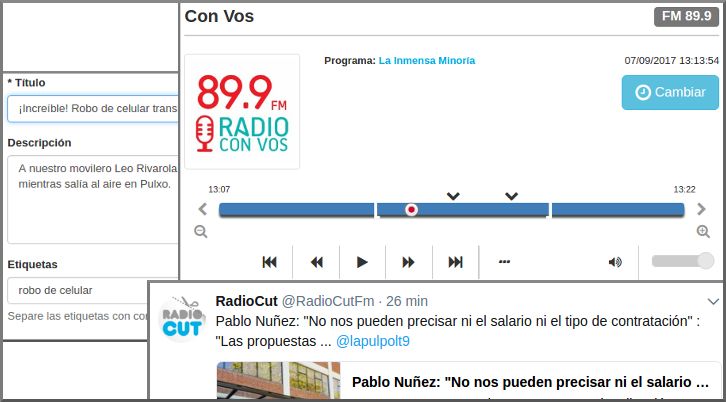

La audiencia de la radio sigue siendo muy grande y sus contenidos vigentes, pero no la forma en que se distribuyen
Permite escuchar programas de radio de hace horas, días o meses. También permite crear recortes y compartirlos donde quieras.

Usuarios
|
Recortes
|
Radios
|
35 minutos de tiempo promedio
+2000 sitios nos embeben mensualmente